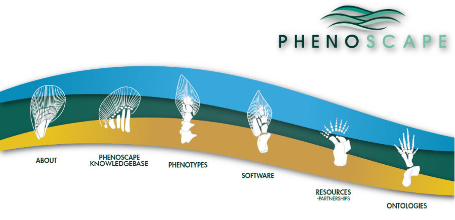

About
Acknowledgements
Background
Learn more
News
Opportunities
Outreach
People
Project intranet
Project plan
Funding
Data sources
Contributors
Publications, posters, presentations
Mailing lists
Jobs
Training and workshops
Project team
Advisory board
Contributors
Links
Workshops and
Meetings
Encyclopedia of Life
Other phenotype
ontology resources
Phenotype RCN
Phenex
Phenoscape KB
Ontology
synchronization tool
Data API
Ontology-based database
Phenoscape data repository
Phenoscape web UI
Source code
Annotation
Homology
Reasoning
Annotation status
Author guide
Curator resources
EQ syntax
Fin-limb test case
Phenotype annotation
Phenotype semantics
Taxon annotation